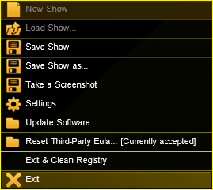

Important:
Once you have finished your show, make sure to adequately shut down the system.
grandMA2 and grandMA2 onPC
Press the power key on the right of the monitor wing or the gray cross in the upper right corner of the grandMA2 onPC.
A warning pop-up appears.
Shut down the system
If you forgot to save the show, tap Save Showfile. The console or the onPC then saves the show file and powers down.
To cancel the shut down, tap Cancel.
To proceed the shut down without saving the show, tap Do not Save.
Important:
-If the onPC is set to MultiScreen, the window Command is the main window that closes the application.
-In SingleScreen, all views are displayed in the main window, hence, every window closes the application.
-In SingleScreen (internal only), all windows, except for Extern 1 and Extern 2, close the application.
Please note that whenever changing the mode, a restart is required.
The console is successfully powered down.
Turn off the power switch on the rear panel and disconnect the plug.
For more information on the location of power key and the power switch see grandMA2 console.
MA VPU (Video Processing Unit) plus
To power down the MA VPU plus, tap Shutdown on the touch screen of the device.
A warning pop-up appears.
Warning pop-up –MA VPU plus
Tap Shutdown.
The MA VPU plus is now powered down.
MA VPU basic and MA VPU light
Requirement:
Connect a monitor, keyboard and mouse to the MA VPU basic or light.
To power down, click File in the upper left corner of the graphic user interface.
A drop-down menu opens.

Powering down via the graphic user interface
Click Exit.
A warning pop-up appears.
Warning pop-up – MA VPU basic and light
Click Shutdown.
The MA VPU basic or light is now powered down.
Power Down at a Distance
If the MA VPUs are not located in close proximity of the area you operate in, there are two possibilities to power down at a distance.
Power down using the command line
Power down using the master fixture
1. Power Down Using the Command Line
To power down the MA VPU at a distance, type the following command and the IP address of the MA VPU into the command line: